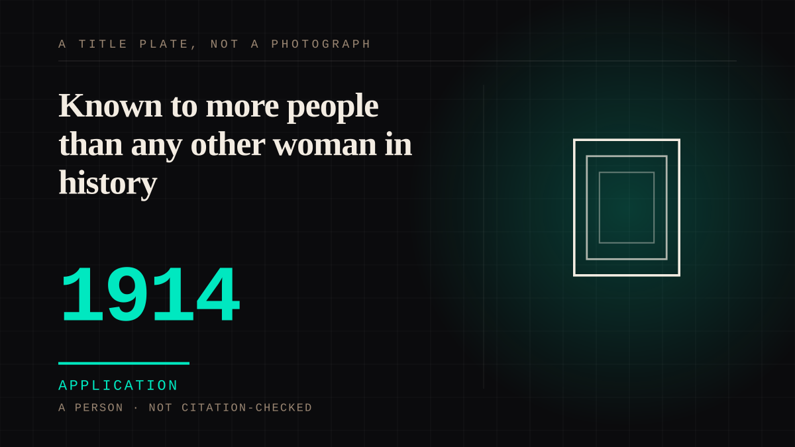

A person · 1914 · Silent era
Known to more people than any other woman in history
The first film performer whose value could be counted instead of guessed. She was on the cover of the New York Dramatic Mirror in 1911, an honour then kept for theatrical stars; by 1916 her fan following had become ten thousand dollars a week, half her film profits and a production company of her own. The audience was never asked for any of it, and every line of the contract exists because of it.

The fan worship is in the contract. St. John's line, as the American Experience page quotes it, is the scale the entry works from: Pickford was "known to more people and loved by more people than any other woman that has been in all history." Reach was the asset, and reach was countable. In 1911 she was the first movie star to adorn the cover of the New York Dramatic Mirror, an honour "previously bestowed only on theatrical stars" - the trade press had already decided that a moving-picture player could carry a cover, and the sentence that records it is careful to say what the honour used to be worth.
Then 1914 and Tess of the Storm Country. The record says the picture "caused a sensation", that it "created fan worship that had never before been witnessed", and that the success "gave Mary Pickford incredible bargaining power"; by 1916 she had "a $10,000 a week salary, 50% of her film profits, and her own production company." The chronology is kept rather than resolved: her foundation dates the renegotiation to May 1916, another account dates a contract at 24 June 1916 with a guarantee of $1.04 million. Both are here, because a date and a number that disagree are the ordinary state of a contract nobody was meant to read. United Artists followed in February 1919, with Fairbanks, Chaplin, Griffith and Hart.
The other side of it is why this is not a portrait. When the company she co-founded had its way, it would "pressure Pickford to limit herself artistically, playing roles she knew her fans would love." Nobody voted and the studio obeyed anyway. That is the shape of the whole period: an audience made sovereign and unaware of it, consulted through a contract clause rather than through a question. By 1927 the highs were over, and what the constraint had been buying was visible from the outside.
Application. One-sided attachment put to work on purpose. Creator economies, community, fandom as infrastructure, and the things that genuinely help people. Not automatically good - a tool with an obvious use is a tool that will also get a bad one.
Where it sits
1900 1900-1949 · 1914 1949
Provenance · 4 source record(s)
- unverifiedThe cover, the sensation and the bargaining power, which is the entry's whole argument in one paragraph. "In 1911, 'Moving Picture Mary' was the first movie star to adorn the cover of the New York Dramatic Mirror, an honor previously bestowed only on theatrical stars."; of the 1914 Tess of the Storm Country, that it "caused a sensation ... created fan worship that had never before been witnessed. In turn, this success gave Mary Pickford incredible bargaining power. In 1916, Pickford had negotiated a contract that gave her a $10,000 a week salary, 50% of her film profits, and her own production company." Read through a search index rather than fetched, so the record is unverified: a reader can open this page, this agent did not.Women Film Pioneers Project, Columbia University, "Mary Pickford" ↗
- unverifiedThe scale sentence the title takes, the names the audience used, and the constraint on the other side of it. St. John: "known to more people and loved by more people than any other woman that has been in all history."; "America's Sweetheart"; "our Mary"; that the highs ran "until 1927"; and that United Artists would "pressure Pickford to limit herself artistically, playing roles she knew her fans would love." Read through a search index rather than fetched, so the record is unverified: a reader can open this page, this agent did not.PBS American Experience, "Mary Pickford: 1892-1979" ↗
- unverifiedThe dates that disagree with the WFPP paragraph, recorded rather than settled. That in May 1916 she renegotiated for $10,000 a week and the choosing of her own roles; a letter of intention dated 15 January 1919 signed by Pickford, Fairbanks, Chaplin, Griffith and W. S. Hart; and United Artists incorporated on 5 February 1919. Read through a search index rather than fetched, so the record is unverified: a reader can open this page, this agent did not.The Mary Pickford Foundation, "Mary Pickford Chronology" ↗
- unverifiedThe competing contract date and the biographical frame. That the contract of 24 June 1916 carried a guarantee of $1.04 million, which is the account that puts the renegotiation a month after the Foundation does - both are kept; that she was born Gladys Louise Smith on 8 April 1892 and died on 29 May 1979; and that she was one of the thirty-six founders of the Academy of Motion Picture Arts and Sciences. Corroboration of dates, not the authority for the fan worship, which is WFPP's and PBS's. Read through a search index rather than fetched, so the record is unverified: a reader can open this page, this agent did not.Wikipedia, "Mary Pickford" ↗
Connected · 2 out, 3 in
It sits in
The full timeline → · The database → · See it in the atlas →